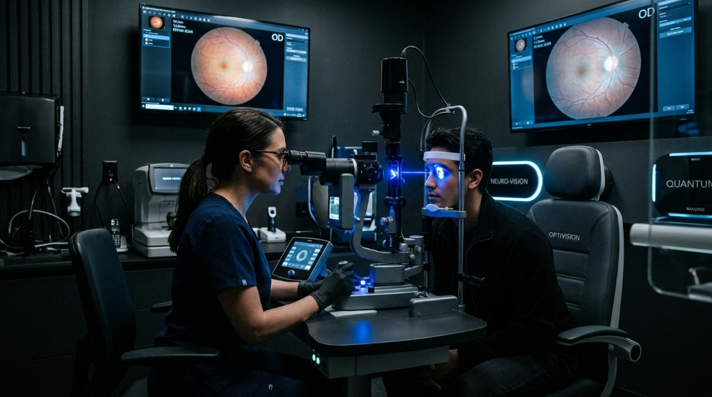

Uma visão mais clara começa com uma avaliação precisa.
Do check-up à cirurgia refrativa e ao tratamento da catarata, avaliamos sua visão com tecnologia diagnóstica computadorizada e acompanhamento médico especializado.
Protocolos clínicos rigorosos em cada etapa
Diagnóstico por imagem de alta resolução
Indicação ética e personalizada ao seu caso
Precisão óptica computadorizada para refração e retina
Histórico, exames, análise detalhada e orientação médica
Equipamentos calibrados para segurança pré-operatória
A indicação terapêutica respeita suas características únicas
Entenda o que influencia sua visão
O olho humano é um sistema óptico de altíssima precisão. Explore as principais estruturas oculares para compreender onde cada alteração visual se origina.
Córnea
Superfície refrativa externa
A superfície transparente anterior do olho. É responsável por cerca de dois terços do poder refrativo total, focalizando os feixes de luz que entram no olho.
Área de atuação da cirurgia refrativa a laser (LASIK / PRK) e crosslinking.
O que mudou na sua visão?
Alterações na nitidez visual são sinais para investigar. Clique sobre a condição para entender suas características e quais exames são recomendados.
Miopia
Dificuldade para enxergar de longe com nitidez (placas, TV e rostos à distância).
Astigmatismo
Visão distorcida ou com sombras para longe e perto, halos e raios noturnos.
Hipermetropia
Cansaço ao ler ou usar telas, esforço visual constante e dores de cabeça.
Catarata
Visão opaca ou enevoada, cores desbotadas e sensibilidade ao brilho de faróis.
Olho Seco
Sensação de areia, ardência frequente, vermelhidão e oscilação de foco visual.
Ceratocone
Astigmatismo irregular progressivo, troca frequente de óculos e coceira ocular.
Alterações da Retina & Mácula
Manchas móveis ('moscas volantes'), flashes de luz periféricos ou perda de nitidez central.
Primeiro entendemos. Depois orientamos.
Uma conduta oftalmológica segura não começa com uma decisão apressada. Conheça as quatro etapas da sua consulta.
Conversa & Histórico
Entendemos suas queixas visuais, rotina de trabalho, tempo em telas, histórico familiar e expectativas em relação aos óculos ou lentes.
Exames Precisos
Aferição do grau (refração computadorizada), tonometria de precisão, biomicroscopia em lâmpada de fenda e avaliação do fundo de olho.
Análise Clínica
Interpretação minuciosa dos laudos e mapeamentos. O oftalmologista explica com clareza a condição real da sua córnea, cristalino e retina.
Orientação Médica
Definição do plano adequado: atualização de óculos/lentes, tratamento clínico ou discussão de indicação cirúrgica, se elegível.

Quando a tecnologia ajuda a enxergar o que os olhos não mostram.
Equipamentos de alta resolução permitem mapear anomalias microscópicas antes mesmo de gerarem sintomas perceptíveis, viabilizando condutas preventivas e procedimentos cirúrgicos milimétricos.
Tomografia de Coerência Óptica (OCT)
Varredura micrométrica das camadas da retina e do nervo óptico sem contato físico.
Topografia Corneana & Aberrometria
Mapa tridimensional das curvaturas da córnea para planejamento de PRK/LASIK e ceratocone.
Sistemas a Laser com Eye-Tracker [CONFIRMAR EQUIPAMENTO]
Rastreamento contínuo dos micromovimentos do olho durante o procedimento cirúrgico.
Especialidades Oftalmológicas
Organizamos nosso atendimento por áreas clínicas específicas, garantindo que cada necessidade visual receba os exames adequados.
Check-up Ocular Completo
Avaliação global da acuidade visual, refração estática e dinâmica para óculos, biomicroscopia e aferição da pressão intraocular.
Tonometria de Precisão
Medição da pressão intraocular com tonômetro de aplanação calibrado, essencial para rastrear precocemente o glaucoma.
Fundo de Olho Preventivo
Exame que visualiza diretamente artérias, veias da retina e disco óptico, auxiliando na identificação de hipertensão e diabetes.
Condições & Convênios: Atendemos consultas particulares e exames complementares com cobertura por convênios médicos. Consulte as condições específicas com nossa equipe.
Liberdade visual começa com uma avaliação completa.
A cirurgia refrativa a laser remodela a curvatura microscópica da córnea para corrigir miopia, astigmatismo e hipermetropia. A indicação depende da estabilidade do grau e da espessura corneana, confirmadas em exames pré-operatórios.
LASIK (Laser-Assisted In Situ Keratomileusis)
É confeccionada uma delgada camada superficial (flap) na córnea. O laser é aplicado na camada intermediária e a lamela é reposicionada sem necessidade de pontos.
Idade mínima de 18 anos, grau estabilizado há pelo menos 1 ano e exames de paquimetria e topografia dentro dos limites de segurança biomédica.
O feixe de luz converge fora da retina (antes na miopia, atrás na hipermetropia), gerando imagem borrada ou desregulada.
A curvatura corneana é ajustada com precisão micrométrica, permitindo que os raios convirjam precisamente na fóvea central.
Arraste a barra para comparar o efeito visual da opacificação.
Recupere a claridade, as cores e a sua autonomia.
O cristalino é a lente natural do olho responsável por focalizar a luz nas diferentes distâncias. Com o avanço da idade ou fatores metabólicos, ele perde a transparência e passa a opacificar, tornando as imagens esbranquiçadas ou amareladas.
Quando indicada, a cirurgia de catarata substitui o cristalino turvo por uma lente intraocular (LIO) permanente e personalizada, permitindo recuperar a nitidez e a segurança ao dirigir, ler e caminhar.
Procedimento Breve
Alta no mesmo dia sem necessidade de internação hospitalar
Conforto Ocular
Anestesia tópica com colírios específicos e sedação leve
Lentes Modernas
Opções que também corrigem astigmatismo e presbiopia
Check-up Rápido da sua Visão
Responda a 3 perguntas reflexivas sobre seus hábitos visuais recentes para receber uma orientação prévia:
Este questionário é estritamente informativo e não substitui uma avaliação oftalmológica presencial.
Especialistas Dedicados à sua Saúde Ocular
Atendimento conduzido por médicos oftalmologistas com títulos de especialista e constante atualização científica.
Corpo Clínico Especializado
CRM [CONFIRMAR COM O CLIENTE] • RQE [CONFIRMAR COM O CLIENTE]- Título de Especialista em Oftalmologia
- Membro do Conselho Brasileiro de Oftalmologia
- Atualização contínua em microcirurgia
"Fiz todos os exames prévios de paquimetria e topografia na própria clínica. O médico tirou todas as minhas dúvidas com calma e me explicou exatamente o que esperar da cirurgia refrativa. A clareza me deu muita segurança."
"Minha mãe operou a catarata com o implante da lente intraocular. Desde a biometria até a alta no mesmo dia, o atendimento foi respeitoso, sem filas e com orientações claras para os colírios em casa."
Perguntas Frequentes
Respostas transparentes e baseadas em evidências para as dúvidas mais comuns sobre avaliação e procedimentos.
A cirurgia refrativa é um procedimento cirúrgico oftalmológico computadorizado que utiliza feixes de laser ultravioleta de alta precisão (Excimer Laser) para remodelar a curvatura microscópica da córnea. O objetivo é permitir que os raios de luz focalizem corretamente sobre a retina, reduzindo a dependência de óculos ou lentes de contato para miopia, astigmatismo e hipermetropia.
A indicação cirúrgica exige avaliação individualizada. De modo geral, o paciente precisa ter pelo menos 18 anos, grau estabilizado há pelo menos um ano, ausência de doenças oculares ativas (como ceratocone não controlado ou infecções) e exames pré-operatórios de imagem comprovando espessura e curvatura corneanas seguras.
A consulta engloba anamnese minuciosa, teste de refração computadorizada para conferência do grau exato, exame de lâmpada de fenda (biomicroscopia) para inspecionar córnea e cristalino, aferição da pressão intraocular (tonometria) e exame de fundo de olho. Caso haja queixas específicas, exames como OCT ou topografia são agregados.
Diferente do passado, hoje não se espera a catarata "amadurecer". A indicação ocorre quando o embaçamento e a perda de contraste passam a comprometer a segurança e a autonomia do paciente em atividades cotidianas, como ler, dirigir à noite ou assistir televisão. O procedimento substitui o cristalino opaco por uma lente intraocular.
O OCT é um exame computadorizado indolor e não invasivo que utiliza ondas de luz para captar imagens microscópicas em corte transversal das camadas da retina e do nervo óptico. É indispensável para o diagnóstico precoce e acompanhamento de glaucoma, degeneração macular (DMRI) e retinopatia diabética.
Ceratocone é uma ectasia corneana em que a estrutura da córnea afina e adquire formato cônico irregular, provocando astigmatismo progressivo. O acompanhamento é feito com topografia e paquimetria seriada, e as abordagens incluem lentes especiais, crosslinking para frear a evolução ou implante de anéis intracorneanos.
O olho seco ocorre quando há baixa produção de lágrima ou evaporação excessiva por alteração nas glândulas de Meibomius, muito comum em usuários crônicos de telas de computador e celular. O tratamento inclui colírios específicos sem conservantes, higiene palpebral, pausas visuais regulares e terapias de superfície ocular.
Oferecemos atendimento particular com tempo integral dedicado ao paciente e aceitamos diversos planos de saúde para a realização dos exames complementares diagnósticos e procedimentos cirúrgicos credenciados. Entre em contato com nossa equipe para consultar a cobertura específica do seu convênio.
Por Que Agendar Sua Avaliação no Instituto de Olhos?
Tecnologia diagnóstica avançada para enxergar o mundo com máxima nitidez e conforto.
Consultórios Rápidos sem Equipamentos
Práticas comuns que geram dor de cabeça- ✕ Consultas de 5 minutos focadas apenas em prescrever grau de óculos
- ✕ Falta de aparelhos para medição da pressão ocular e prevenção de glaucoma
- ✕ Encaminhamentos sem explicação das opções de cirurgia a laser ou catarata
- ✕ Ambientes frios sem acolhimento para idosos e crianças
Instituto de Oftalmologia Especializada
Compromisso formal com o seu resultado- ✓ Check-up ocular completo: refração computadorizada, tonometria e mapeamento de retina
- ✓ Especialistas em cirurgia refrativa a laser (LASIK/PRK) para livrar-se dos óculos
- ✓ Cirurgia de catarata com microincisão e implante de lentes intraoculares nobres
- ✓ Equipamentos de tomografia de coerência óptica (OCT) de padrão internacional
Visite nossa clínica
Estrutura planejada para acolher com conforto, acessibilidade e salas de exames integradas.
Av. Paulista, 1000 - Próximo à Estação Trianon-Masp • Bela Vista / Jardins
Seu próximo passo começa com uma avaliação completa.
Converse com nossa equipe para agendar sua consulta, esclarecer coberturas de convênio e dar o primeiro passo em direção a uma visão nítida e segura.
Respeito à sua privacidade e conformidade com o Código de Ética Médica do CFM.